能力边界
设计思想
主要输入
终态产物
Agentic model operations · reproducible by design
把模型发现、环境适配、容器转换、人工审批、推理评测与无推理复评，组织成一套可检查、可恢复、可复现的 Agent 工作流。
01 · 发现入口
02 · 构建入口
03 · 信任边界
04 · 运行与评测
05 · 复用与演进
六个 Skill 不是六个大 Prompt，而是六套有输入合同、状态机、Gate 脚本和终态工件的受控执行单元。它们通过文件工件交接，而不是共享模糊的对话状态。
SURE 把“探索性判断”和“确定性验证”拆开。Agent 可以研究、规划与修复，但不能跳过状态、伪造通过或直接写入受保护发布区。
选择模型、证据、适配策略、数据集与评测路由。开放问题交给 Agent，避免把研究过程硬编码成脆弱脚本。
一次只推进一个 Unit。每步都有唯一 produces 工件、重试计数与恢复点，失败后可以从 checkpoint 继续。
Schema 检查形状，Gate 脚本验证语义，真实命令验证运行。Agent 写出的 passed 字段本身不能证明通过。
Runtime、锁文件、镜像 digest、预测 hash、pipeline 与报告被固化。系统复现的是整条实验身份，而不只是一个分数。
Hook 从本次运行生成稳定摘要，作为经验提取的证据边界。
Agent 声明没有新经验，或写出带触发条件与证据的候选经验。
运行结束后自动发布到 provisional 区，不直接进入可信知识。
人工审阅后才进入 references 与共享 facts，保留信任边界。
后续运行只加载与当前目标匹配的少量事实，并要求再次验证。
Harness 控制逻辑、模型推理依赖和评测引擎依赖被明确分离。环境不再是“当前 shell 能跑就算通过”，而是有名字、有锁、有来源的执行身份。
TUI 是入口，真正的产品是结构化工件：每个阶段都留下可复查的输入、输出、执行身份和失败上下文。
Slash command 描述目标与边界，例如模型、数据集、协议和执行方式。
研究证据、选择后端、制定执行计划；每个判断写入独立工件。
Schema、哈希、真实运行、MCP、等价性和边界策略逐层验证。
Runtime identity、预测、pipeline、指标、报告与审批决定持久保存。

The system-level idea
SURE Harness 允许开放式研究发生，同时要求每一个可运行结论都经过确定性验证、显式审批与可追溯记录。